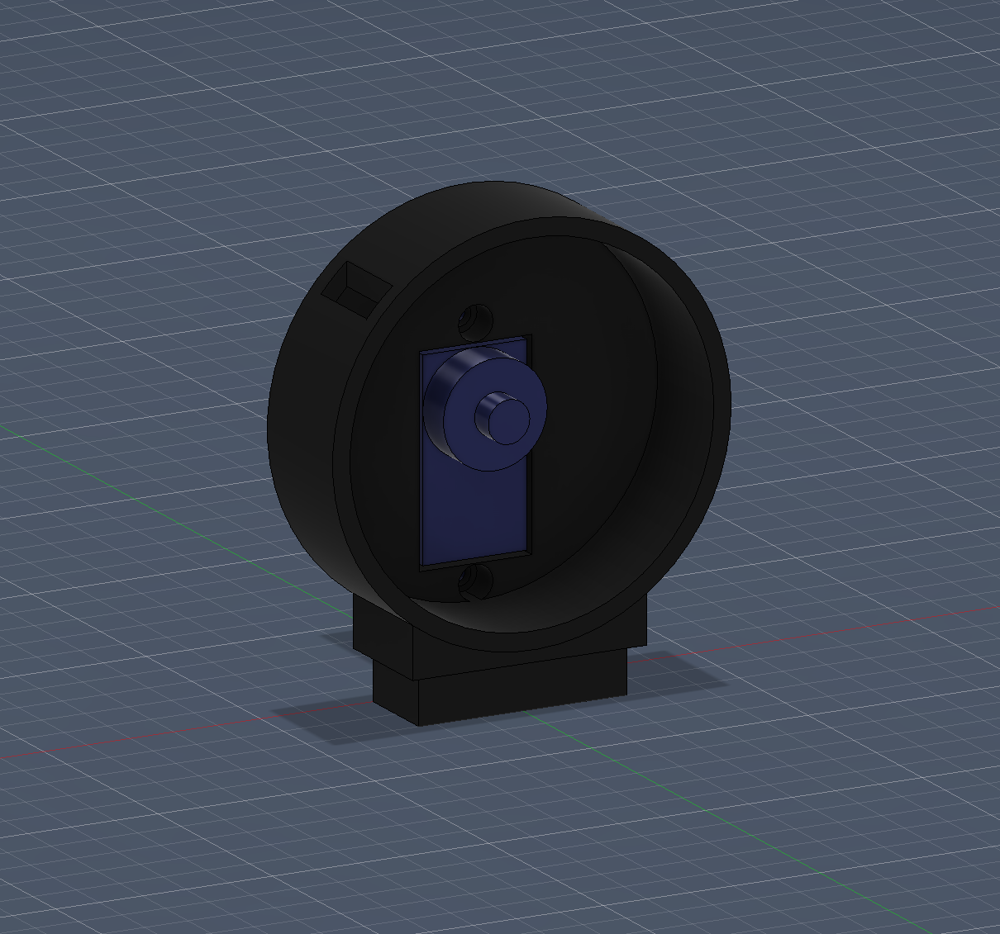
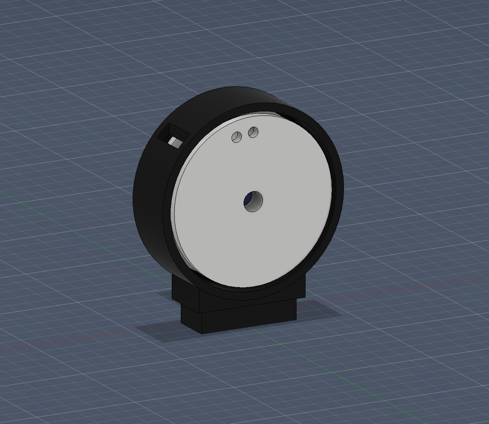
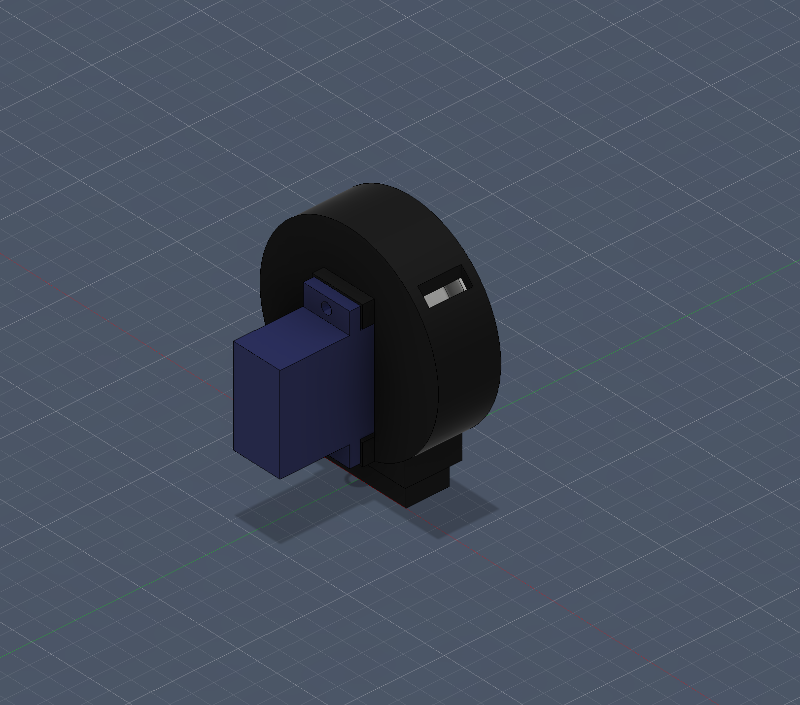
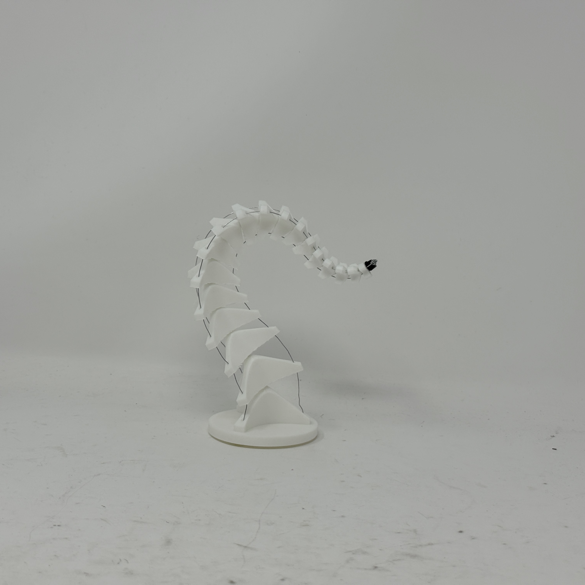
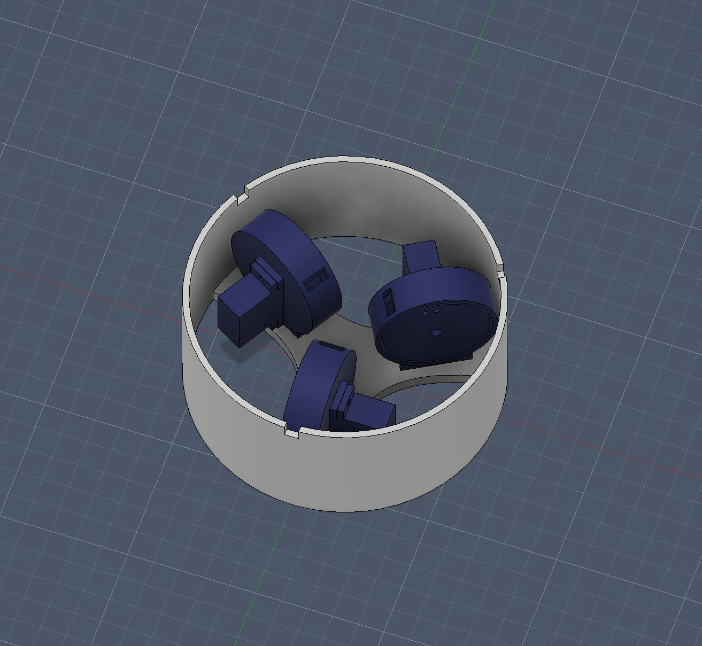
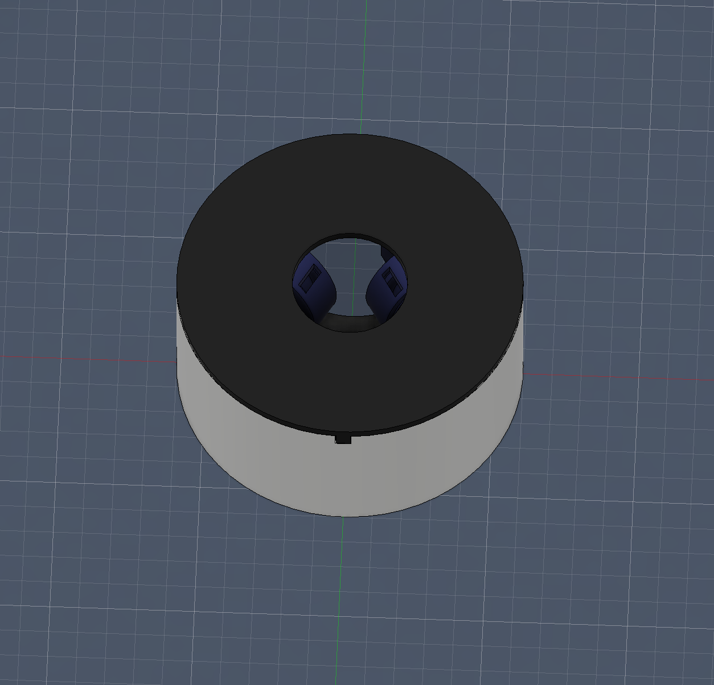
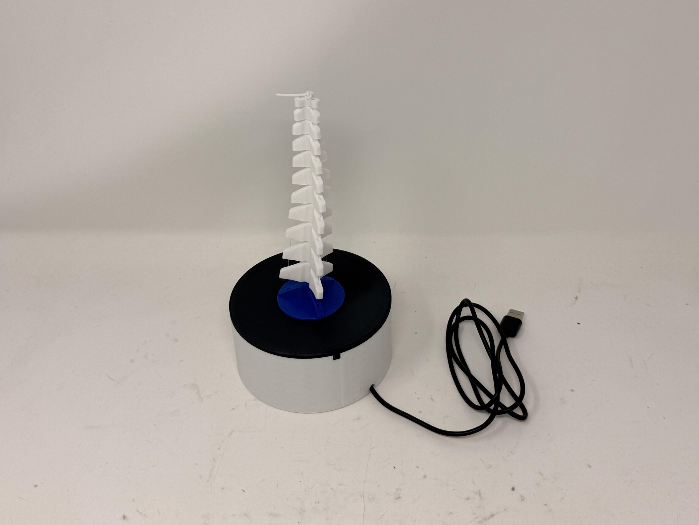
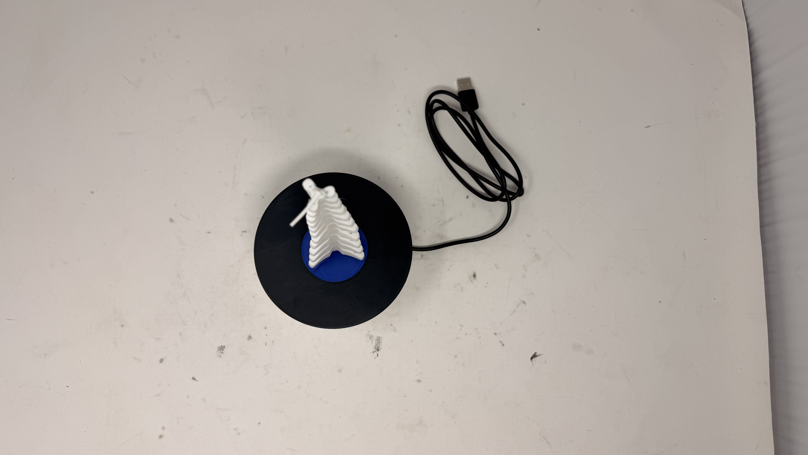

Overview
This project is a ground-up build of a tentacle-style manipulator: 3D-printed links for compliant motion, a dedicated actuator module, and iterative housings from open layouts to a closed shell. The goal was a device that looks and moves like a coherent limb—not a loose stack of parts—while staying debuggable through early prototypes.
Actuation module design and early form
Hover tiles for short captions. Renders and photos track how the actuator concept and first vertical build came together.




Housing
Base housing CAD design shown with actuator modules attached


Integrated prototype
Final physical assembly on the powered base.


GIFs & footage
Short loops and clips show grab behavior, rotation, and desk testing.


Video
Two more clips of the prototype in motion.
Mechanics
I designed a segmented tentacle that had two main elements that facilitates its movement. TPU spine: by designing each segment to snugly slide along a piece of flexible TPU filament, the tentacle can easily stretch and bend with uniform rigidity along the entire tentacle. Fishing line channel placement and leverage: each segment is smaller than the prior, thus the diminishing distance from the center of each segment’s channel creates diminishing leverage and far greater motion at the base of the tentacle.
Programming & Integration
Utilizing a servo to control each axis of movement allows for intentional and precise control when programming. I built a python app that sends serial commands that rotates the servos to the correctly plotted points (as per the calculated trigonometry of x,y points on a circle). To explain the proportions of control in short, when moving directly along an axis, the other two axes must also be rotated by a factor of -1.8 multiplied by the delta to prevent slack in the fishing line.